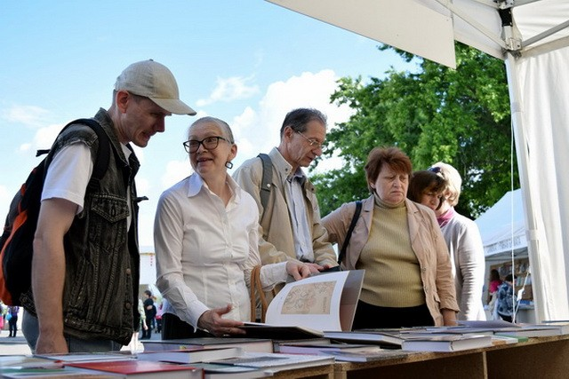

Воронежская область стала самым читающим регионом России
06.10.2017
После подведения итогов Всероссийского конкурса «Самый читающий регион» среди субъектов Российской Федерации определён регион, удостоенный звания «Литературный флагман России». Первое место и почётное звание были единогласно присуждены Воронежской области.
В этом принципиально важном проекте Воронежу удалось опередить все субъекты Федерации, включая обе столицы. Официальный сайт конкурса констатировал, что Воронежская область славится своим богатейшим литературным и культурным наследием и прилагает значительные усилия не только по его сохранению, но и приобщению к нему молодёжи.
Источник: Культура ВРН